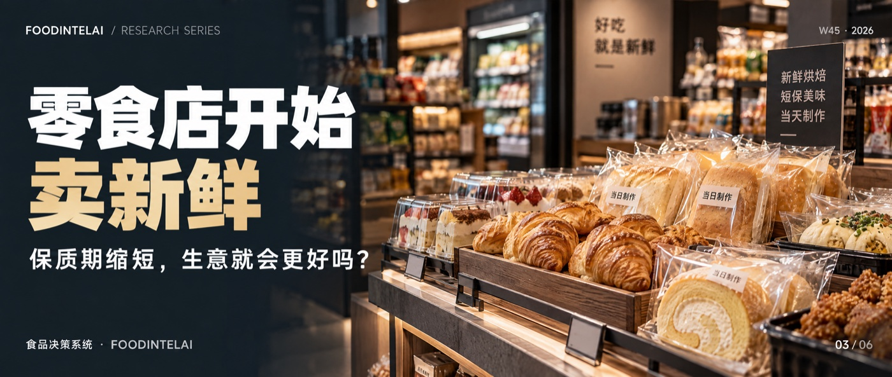

新鲜零食毛利率35%，损耗率8%到15%：高毛利，能变成利润吗消费任务与跨业态替代研究 · 第3篇 新鲜度、周转与损耗 ｜ QTOS-DEMAND-001-CFoodIntelAI 研究组 · 沧林 ｜ 2026年11月4日 ｜ W45专题 3/6新鲜零食的毛利率能做到30%到40%，损耗率却有8%到15%，是传统包装零食的五倍。毛利是账面上的高，利润是扣完损耗之后剩下的。第三篇只算一道题：短保把毛利做高了，能不能变成真正的贡献利润。
图｜FoodIntelAI W45 系列（共 6 篇），本篇为第 3 篇。2025年，新鲜零食这个赛道的规模，据多家机构整理，从2020年不足50亿元涨到了180亿元，年均复合增速超过40%。2026年，金粒门在南京开出华东首店，开业前三天销售额就突破了100万元；一栗北京首店首月营收620万元。选址的人都在看B1层的排队。文献单源但在同一个赛道的上一个风口里，情况正好相反：量贩零食的两家巨头，鸣鸣很忙2025年关闭门店265家，万辰集团关闭602家。新鲜零食要回答的，是同一个问题：把保质期缩短，把东西做得更“鲜”，生意就会更好吗？文献行业里的说法很统一：毛利率高。华创证券调研金粒门的毛利率是35%到40%，长江证券给的新鲜零食区间是30%到40%。但同一批研报还有另一个数：东方证券给出的新鲜零食平均损耗率是8%到15%，传统包装零食只有1%到3%，大约是五倍。文献单源毛利率是账面上的高，贡献利润是扣完损耗之后剩下的。短保把前者做高了，也把后者做薄了。本篇是W45专题的第三篇。这篇用到的数据，大多数来自券商研报和行业白皮书的转述，只有单一来源，所以本篇不下任何行业结论，只做情景测算，回答一道题：高毛利，能不能变成实际的贡献利润。约177万元300平方米购物中心新鲜零食店月保本销售额（行业模型测算）数据：东方证券研报、七货街白皮书、华创证券调研，均经媒体转述，单一来源。取区间中点仅为便于比较，不代表某一家企业的实际数据。新鲜零食卖的是现制、短保、少添加的食品：卤味、烘焙、果切、现制饮品、热食。按行业人士的描述，一家300平方米左右的门店里，保质期1到5天的短保商品，占到SKU的近一半，贡献六成左右的销售。这是它区别于量贩零食的地方：量贩零食卖的是便宜，鸣鸣很忙同类产品的均价比其他线下渠道低25%左右；新鲜零食卖的是“看得见的新鲜”，客单价高得多，金粒门约50到60元。单源这两种生意的运营难度不一样。便宜的生意，难在库存效率，货能多快地卖出去；新鲜的生意，难在新鲜效率，货能多快地卖出去，而且卖不出去的，大部分就是报损。最简单的算法是：贡献率约等于毛利率减去损耗率。再扣掉折价让利和现制的变动成本，数字还会更低，这里先只扣损耗。取毛利率35%（区间中值），损耗率分别取8%、11.5%、15%，同时假设门店月固定成本50万元，得到表1。示意贡献率 = 毛利率35% − 损耗率，损耗率按占销售额的比例处理；月固定成本50万元为假设。损耗率从8%升到15%，贡献率从27%掉到20%，保本销售额从约185万元升到250万元，高了三分之一以上。这个量级，和行业模型里300平方米店月保本销售额约177万元、业内称“月销180万是及格线”的说法，大体是同一个数量级。开业首月的500万、600万，是热度，不是稳态。笔者测算单源短保商品的损耗，不是一个固定的比例，而是备货决策的结果：备得多，缺货少，报损多；备得少，报损少，缺货多。表2用一个虚构的单品演示：日需求平均100份，波动±20份，售价100元，成本65元，毛利率35%。示意备货量缺货率报损占备货日利润（不折价）日利润（晚间4折）假设日需求服从均值100、标准差20的正态分布；未售出的商品，不折价则全额报损，晚间折价则按售价4折售出。这张表有两个结论。第一，想把缺货压低，只能靠多备货，每多备10份，报损就多一大截，备到120份，缺货率只剩约1.7%，但约18%的备货要被处理掉。第二，处理方式会改变最优点：不折价时，利润最高的备货点低于平均需求，约在92份；晚间折价清货时，最优点移到约104份。也就是说，折价清货不是“降价卖不好”，它是在重新定义该备多少货。示意还有一个常被忽略的变量：预测的准确度。在同样备货100份的情况下，需求波动从±20份扩大到±40份，报损率就会从8.0%翻倍到约16.0%。毛利率相同的两家店，谁的销量预测更准，谁留下的利润就更多。示意新鲜意味着要有一套能每天到店的供应链。来伊份的优势，据媒体介绍，是近十万平方米的物流中心和每日到店的冷链网络；湖南新佳宜放慢开店，投入数千万元建设了鲜食工厂。这些都是固定投入，门店越多越能摊薄，但门店越多、品类越杂、品控越难。一财商学院的文章据此判断，新鲜零食的门店规模，千店几乎是物理上限。这是机构的观点，不是已被证实的结论。文献研究假设另一个旁证是上一个风口的刹车：量贩零食2025年两家巨头的闭店数合计867家。但需要说明，量贩零食和新鲜零食的经营逻辑不同，闭店数不能直接推导新鲜零食的未来。文献金粒门坚持直营，全国门店还不到30家，其中15家在长沙大本营。这说明单店模型可能很强，复制却很慢，两件事是同一件事的两面。单源一家新店开业，带着天然的效应：猎奇、打卡、开业促销的让利。金粒门南京店三天破100万，一栗北京店首月620万，清山森郑州店首月超过500万，这些数字都是真实披露的开业成绩，但不能当作稳态。真正的判断，要看热度退去之后的第三个月、第六个月：还有没有足够的客流，复购跟不跟得上，商品还能不能保持高周转。单源开业前三个月，建议每周记一次：日均销售额、报损额、折价销售额、缺货时段。拿这条曲线去对照保本线，比拿开业首月去对照要诚实得多。研究假设一个初始的判断条件：开业第三个月的月销，能不能维持在开业首月的一半以上。能，说明热度之外还有基本盘；不能，要重新检查客流和复购。这个比例是假设，需要用更多门店的数据校准。研究假设报损率报损金额 ÷ 进货金额，按SKU统计找出拖累整体的少数单品折价销售占比折价销售额 ÷ 总销售额判断“新鲜”是否靠清货维持缺货时段占比缺货时间 ÷ 营业时间，按时段判断是否备得太少SKU层面的处理规则，初始设定如下：贡献率为负的单品下架；报损率连续两周高于同类单品均值一倍的，调整备货或缩短陈列时间；缺货时段集中在高峰的，优先补备货。阈值没有经过样本校准，只是一个起点。研究假设如果你也在考虑给店里加短保商品或现制品，先问三件事：这个品类扣掉报损之后的贡献率是多少，而不是毛利率是多少；你的销量预测有多准，备货误差一旦扩大，报损会放大到多少；你有没有折价清货的通道，有没有让剩下的商品变成一部分收入的办法。折价销售占比也要盯着看。折价清货保住了利润，但如果折价占比持续升高，往往说明备货偏多，或者定价偏高。“新鲜”的卖点，不能靠每天晚上打折来维持。另外建议先用一两个SKU、两三家门店试一个月，记录三个指标，再决定扩多大。研究假设毛利率回答的是“能赚多少”，损耗率回答的是“能留住多少”。下一篇回到消费者，换一个角度：一顿午饭，消费者究竟在为什么付钱。我们会把餐馆、便利店即食和商超熟食放在同一个餐次里比较，并明确区分：哪些是已有的观察，哪些还需要真实样本。完整研究 · foodintelai.com 知识库新鲜度—周转—损耗模块与监测指标，随专题推进陆续沉淀到青藤OS。[1] 东方证券研报（经赢商网转述）：新鲜零食平均损耗率8%至15%，传统包装零食1%至3%；七货街《中国新鲜零食行业标准白皮书（2026）》给出的区间相当。单一来源链，仅作情景区间。[2] 毛利率：华创证券调研，金粒门门店毛利率35%至40%，单店面积约300平方米，客单价50至60元，优质门店月销可达400万元以上（经潮汐商业评论、界面新闻转载）；长江证券2026年6月研报，新鲜零食毛利率区间30%至40%（经赢商网转述）。均为券商研报转述，单一来源。[3] 市场规模：新鲜零食规模由2020年不足50亿元升至2025年180亿元，年均复合增速超过40%；浙商证券预测2026年400亿至500亿元，为预测值（经新快报、证券之星、潮汐商业评论、一财商学院转载）。开业数据：金粒门南京首店开业前三天销售额突破100万元（新快报、证券之星）；一栗北京合生汇首店首月营收620万元、清山森郑州首店首月超500万元（零售圈，经虎嗅转载）。[4] 月保本销售额约177万元（300平方米购物中心店，据三个皮匠报告网单店模型测算，山西证券报告引用；经零售圈、虎嗅转述），“月销180万为及格线”为该文作者观点。鸣鸣很忙2025年关闭门店265家、万辰集团关闭602家（新快报）。来伊份近十万平方米物流中心及每日到店冷链网络（证券之星）；新佳宜投入数千万元建设鲜食工厂（虎嗅、泛娱研究）；“千店是新鲜零食的物理上限”为一财商学院观点。证据等级：“文献”为上市公司披露、机构公开报告或主流媒体转述；“单源”表示该数据只有一个来源链（多为券商研报或白皮书，经多家媒体转述），仅作情景区间，不作行业结论；“笔者测算”为基于上述数据的推算；“研究假设”为本专题的判断；“示意”为演示用的虚构数值。
口径说明：(1) 损耗率的统计口径（占销售额还是占进货额）在原研报中未明确，本文表1按占销售额处理，表2按占备货量处理，结果只能看量级。(2) 毛利率、损耗率、保本销售额均为券商或机构的调研与模型数值，并非上市公司披露的行业统计。(3) 开业数据为企业或媒体披露的开业阶段成绩，不代表稳态。(4) 表1、表2中的固定成本、需求分布、成本价格均为假设。
数据截止：2026年10月24日。声明：本文为行业研究，数据来自公开资料，不构成投资、经营或法律建议。本文在AI辅助下完成起草，经作者审核。